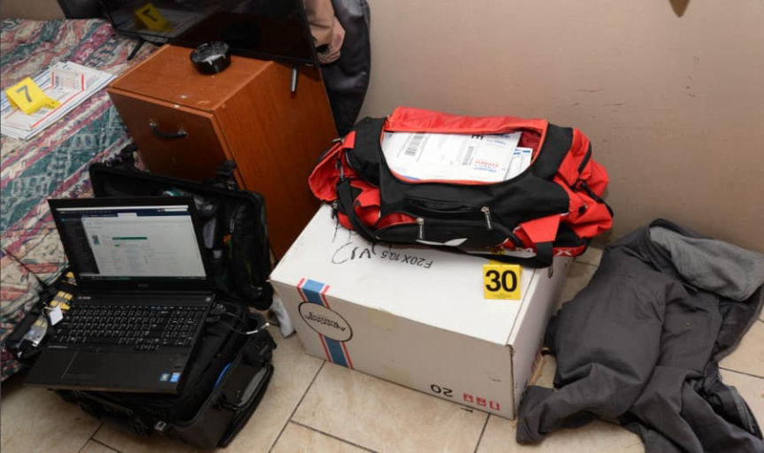
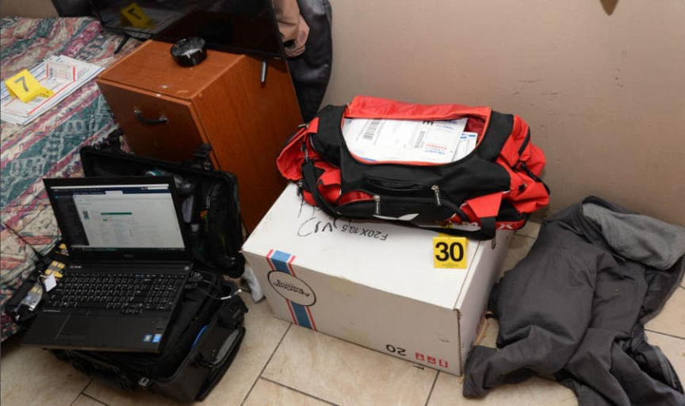

SicknessVersion2 Defendant Sentenced to 11 Years in Prison
~9 min read | Published on 2022-02-22, tagged Darkweb-Vendor, Sentenced using 2128 words.
An Arizona man will be spending more than 11 years in prison for selling heroin on the darkweb under the username “SicknessVersion2.”
U.S. District Judge Troy L. Nunley sentenced David Lee White, 52, of Chandler, Arizona, to 11 years and three months in prison. According to court documents, White, alongside two co-defendants, operated the vendor accounts “SicknessVersion2” and “23mightymouse23” on Dream Market. White distributed heroin, cocaine, methamphetamine, marijuana, and other controlled substances to customers throughout the United States through the vendor accounts.
Co-Defendants
White’s co-defendants, Jason Arnold and Alicia Mccoy, have not been sentenced. Arnold pleaded guilty to count one in the indictment (conspiracy to distribute controlled substances). Since White named both of them in his plea agreement, they had very little room to avoid a conviction. McCoy has not yet entered a guilty plea. Arnold’s girlfriend appears regularly in the criminal complaint but remains unindicted. I am leaving her name out of the article.
Undercover Purchases
His customers included federal agents. Federal Bureau of Investigation (FBI) Special Agent Daniel M. Bryant wrote that investigators conducted their first undercover purchase of heroin in May 2018. Between May 2018 and December 2018, federal agents purchased heroin from SicknessVersion2 on Dream Market on at least five occasions. The vendor mailed the packages of heroin to addresses controlled by the United States Postal Inspection Service (USPIS). After delivery of the package, investigators opened it and field-tested its contents. Special Agent Bryant wrote that the vendor had disguised the heroin within bags of Haribo gummy bears. The sender’s name often referenced “sweets” or “treats.”
USPS Records
Using USPS records, case agents analyzed the United States Postal Service (USPS) tracking numbers on the packages. The feds could have based their entire case on the records associated with just one of the tracking numbers. For example, the tracking number 9405 5016 9932 0155 7645 77 belonged to a prepaid USPS Priority Mail shipping label purchased on May 15, 2018, by the USPS customer “jasoncka23.” On that date, the customer had purchased 100 prepaid USPS labels, including the one referenced above.
USPS records identified the user “jasoncka23” as Jason Arnold. Arnold had registered the USPS account using his home address in Chandler, Arizona, and regularly accessed the Postal Service website using the IP address 98.165.31.245. Arnold had also provided USPS with an email address, business address, and phone number.
USPS records showed that Arnold had purchased approximately 1,100 labels using the same “jasoncka23” account between April 9, 2018, and November 2, 2018. About 1,000 packages had entered the mail system. The vendor had sent most of the packages to addresses in the United States. Still, people in France, Canada, New Zealand, Australia, and Bangladesh had received more than 100 packages.
Many of the labels had the name of the sender listed as:
“Sweets for my Sweet”; “Candy Store”; “Sweet Tooth”; “Sweet Designs”; “Nettles Sweet Emporium”; “Hays Sweetie”; “Haribos Sweets”; “Ware’s Sweets Emporium”; and “D&A Sweet Emporium”;
Arnold’s purchases through his USPS account totaled more than $11,000.
USPS Employees/Informants
In the criminal complaint, Special Agent Bryant described how a regular employee of the Postal Service had regularly provided information about White to federal investigators. Specifically, an employee at the Post Office in Gilbert, Arizona, told investigators that an individual, later identified as White, had purchased $100 worth of Sleeping Bear Dunes Priority Express stamps on December 10, 2018. On the same day, another USPS employee collected mail from the Post Office’s mail collection box and found approximately 10 Priority Express packages with the same Sleeping Bear Dunes stamps. The employee reported that the return addresses on every package were listed as “Chris’ Candy” or “Chris’s Candy’s.”

Later that day, White returned to the same Post Office and purchased approximately $300 worth of Sleeping Bear Dunes Priority Express stamps. The USPS employee/informant watched White enter a vehicle. Although the employee managed to remember the vehicle’s license plate number, their description of the car consisted of “a 2008 Dodge Charger.” This identification seems impressive since the differences between the different sixth-generation Chargers are so subtle. In 2009, Dodge moved the “Charger” emblem from the left side of the decklid to the right side. I am not sure there are any differences between the SE models in 2006, 2007, or 2008.
“On or about December 26, 2018, a US Postal employee in Arizona advised case agents that a female customer attempted to purchase 12 Sleeping Bear Dunes Express mail stamps. The employee observed the woman exit a black Dodge Charger and enter the post office. Further, the employee stated that the woman left the post office then returned to the same black Dodge Charger.”
“According to the same employee, after the woman returned to [the Charger], a person matching the description of White exited the driver’s side and dropped several items into a blue postal collection box just outside the front lobby door at the Post Office. Within minutes of this drop-off, a US Postal employee pulled the items from the postal collection box and saw several mailings which listed “Chris’s Candy’s” and “Sweet Tooth” as the sender with the same return address of [an address associated with White].”
“In addition, the employee noted that affixed to each of the items were Sleeping Bear Dunes Express stamps. The employee described the female as very short. Maricopa county booking information for Alicia Mccoy listed her height as 5’0.” Further, after reviewing social media pictures of White’s girlfriend, Alicia Mccoy, and Maricopa County booking photographs of Alicia Mccoy, the US Postal employee positively identified Alicia Mccoy as the female who purchased postage on or about December 26, 2018.”
Feds conducted “open-source analysis” on Arnold’s USPS account’s email address and phone number. They found social media accounts linked to Arnold that had “references to […] words similar to SicknessVersion2, such as “sikness23”; “Big Sickness”; “sick”; and “2siclunade3.” Additionally, Arnold has the word “sick” tattooed on his neck.
Coinbase
Coinbase provided investigators with information associated with the defendants as well as Arnold’s unindicted girlfriend.
Some of the critical information provided by Coinbase included transaction history, usage patterns, and specific account labels. Arnold, for example, had added his Wells Fargo bank account to his Coinbase account. He had labeled the account “Wells Fargo - Sickness.”Coinbase - Arnold
Between December 7, 2017, and July 9, 2018, Arnold’s Coinbase account received approximately 20 Bitcoin and sold over 20 Bitcoin in exchange for $143,000. Arnold then transferred the money to his Wells Fargo account. Between March 30, 2018, and June 12, 2018, Arnold received at least six Bitcoin transfers from external addresses totaling approximately $9,200. On May 23, 2018, Arnold withdrew $3,187. (“This is around the same date of the first undercover purchase,” Special Agent Bryant wrote.) Coinbase closed Arnold’s account on July 9, 2018. Coinbase - Arnold’s Girlfriend
Between July 14, 2018, and October 28, 2018, Arnold’s girlfriend received and then sold 19 Bitcoin worth approximately $128,885. On July 25, 2018, she withdrew approximately $8,000 and $2,320 (around the same date as the second undercover purchase). On October 20, 2018, she withdrew approximately $2,636 and $3,551 (this is around the same date of the third undercover purchase, as described above).
Coinbase closed the account on October 28, 2018, for suspicious activity.Coinbase - White
From November 12, 2018, through December 26, 2018, White sold approximately 12.693 Bitcoin in exchange for $54,803.
Coinbase also provided information about McCoy’s account, but it is essentially a repeat of what I listed for White.
Surveillance
On December 28, 2018, agents conducted surveillance at the Chandler Andersen Springs Post Office. The 2008 Dodge Charger arrived at the post office; McCoy exited the vehicle and went inside. Agents followed her inside. McCoy purchased ten Priority Mail stamps and 20 Priority Mail Express stamps for $561. After buying the stamps, McCoy returned to the Charger and put on blue latex gloves. Agents watched McCoy place items in envelopes while inside the vehicle. After six minutes, McCoy circled the parking lot to the blue collection box drop-off. Police watched her place Express Mail envelopes into the collection box. She had not taken the gloves off, agents noted.
A USPS employee pulled the packages out of the collection box after McCoy had left the Post Office. Several Express Mail packages had return names listed as “Sweet Tooth” and “Chris’s Candy’s.”
Agents followed the Charger to The Aloha Motel in Chandler, Arizona. White and McCoy lived at the hotel in room 44. According to White’s attorneys, “Arnold paid for a hotel and food, so White and McCoy could live. White never made a penny from his conduct.”
The rest of the surveillance described in the criminal complaint is more of the same. In summary, the feds watched Arnold meet White and McCoy at the hotel. They watched White meet Arnold at Arnold’s residence. They watched Arnold drive White to the Post Office in one of his many vehicles, including a 2010 Dodge Challenger and a 1957 Chevrolet Bel Air. The 2008 Charger functionally belonged to Arnold; his girlfriend’s mother had registered the car.
[b][i]definitely[/em] a random encounter with police [/b]
On December 26, 2018, officers with the Mesa Police Department pulled over a 1957 Chevrolet Bel Air. Officers claimed they were responding to a shots fired call near an apartment complex in Mesa, Arizona. According to court documents, the police saw White in the Bel Air and thought he fit the description of the purported shooter.
Police removed the driver, Arnold, and White, the passenger, from the car. During a pat-down, officers found $4,000 and a bag of heroin in White’s front pocket. White told the officer that he had earned the cash with Arnold by flipping cars. Police also found $4,134 and a bag of heroin on Arnold. Mesa Police arrested both men. Between the December 26, 2018, arrest and their arrests on February 22, 2019, the Arizona court system released both White and Arnold.
Arrests
In February 2019, the feds arrested Arnold, White, and McCoy for conspiracy to distribute a controlled substance (methamphetamine and heroin) and distribution of a controlled substance (heroin). The indictment included one count of the conspiracy charge and four counts of the distribution charge.
During the execution of search warrants, police found logins for vendor profiles and lists of customer names, addresses, and purchases. They also found at least 315 grams of heroin, 45 grams of cocaine, 593 grams of methamphetamine, and 30 grams of marijuana.

Full res UFED 4 available [img=]here[/img].
After being arrested, it seems as if Arnold attempted to blame McCoy for masterminding the operation. Discovery pages Arnold_002374-75:
“Agents told McCoy that Arnold was saying she was the mastermind/computer person and that on her phone showed evidence of her involvement regarding another moniker/vendor, 23mightymouse23. McCoy said it was not their thing but Arnold’s. Drugs would come from Arnold. Arnold sent a list of customers to McCoy. McCoy said they (McCoy/White presumably) were mules. There was not a typical payment amount McCoy received. Arnold did not have a partner, McCoy did not know all the details, McCoy was told what to do.”
And Discovery page Arnold_02376:
“Arnold showed McCoy how to do everything with the computers. White really did not do anything with the computers. McCoy did not see [Arnold’s girlfriend] on the computers. As far as she knew, it was just herself and Arnold.”
Arnold Talks
After his arrest, Arnold provided the Department of Homeland Security with the usernames, passwords, and pins to the vendor accounts on Dream Market. He signed a form authorizing the federal government to use his profiles. Arnold interviewed with the government several times to receive a reduced sentence for his cooperation. After his first interview with the government, Arnold was unhappy with his proposed sentencing reduction.
At a later debrief, Arnold tried to earn more time off his sentence by informing on someone else. He told the feds that McCoy and White had operated 23mightymouse23. This contradicted a previous claim where Arnold claimed that he managed the SicknessVersion2 and 23mightymouse23 vendor accounts. Not only did Arnold know the pin for 23mightymouse23, but the pin also matched his Arizona Department of Corrections identification number. McCoy stated that she did not know the pin to the 23mightymouse23 account.
Arnold pleaded guilty to only one of the five counts in the indictment. White pleaded guilty to two. I suspect whatever he gave the feds proved at least somewhat helpful.
And that is on top of the thousands of incriminated customers.
As always, this case “was the product of an investigation by the Northern California Illicit Digital Economy (NCIDE) Task Force.” (which is very real and totally not an op.)
archive.org, archive.is, onion
complaint pdf, html
indictment pdf, html
U.S. District Judge Troy L. Nunley sentenced David Lee White, 52, of Chandler, Arizona, to 11 years and three months in prison. According to court documents, White, alongside two co-defendants, operated the vendor accounts “SicknessVersion2” and “23mightymouse23” on Dream Market. White distributed heroin, cocaine, methamphetamine, marijuana, and other controlled substances to customers throughout the United States through the vendor accounts.
Co-Defendants
Feds identified White on USPS CCTV footage.
White’s co-defendants, Jason Arnold and Alicia Mccoy, have not been sentenced. Arnold pleaded guilty to count one in the indictment (conspiracy to distribute controlled substances). Since White named both of them in his plea agreement, they had very little room to avoid a conviction. McCoy has not yet entered a guilty plea. Arnold’s girlfriend appears regularly in the criminal complaint but remains unindicted. I am leaving her name out of the article.
Undercover Purchases
His customers included federal agents. Federal Bureau of Investigation (FBI) Special Agent Daniel M. Bryant wrote that investigators conducted their first undercover purchase of heroin in May 2018. Between May 2018 and December 2018, federal agents purchased heroin from SicknessVersion2 on Dream Market on at least five occasions. The vendor mailed the packages of heroin to addresses controlled by the United States Postal Inspection Service (USPIS). After delivery of the package, investigators opened it and field-tested its contents. Special Agent Bryant wrote that the vendor had disguised the heroin within bags of Haribo gummy bears. The sender’s name often referenced “sweets” or “treats.”
Feds seized tons of customer records. I blurred the last names for some reason.
USPS Records
Using USPS records, case agents analyzed the United States Postal Service (USPS) tracking numbers on the packages. The feds could have based their entire case on the records associated with just one of the tracking numbers. For example, the tracking number 9405 5016 9932 0155 7645 77 belonged to a prepaid USPS Priority Mail shipping label purchased on May 15, 2018, by the USPS customer “jasoncka23.” On that date, the customer had purchased 100 prepaid USPS labels, including the one referenced above.
USPS records identified the user “jasoncka23” as Jason Arnold. Arnold had registered the USPS account using his home address in Chandler, Arizona, and regularly accessed the Postal Service website using the IP address 98.165.31.245. Arnold had also provided USPS with an email address, business address, and phone number.
More customer records.
USPS records showed that Arnold had purchased approximately 1,100 labels using the same “jasoncka23” account between April 9, 2018, and November 2, 2018. About 1,000 packages had entered the mail system. The vendor had sent most of the packages to addresses in the United States. Still, people in France, Canada, New Zealand, Australia, and Bangladesh had received more than 100 packages.
Many of the labels had the name of the sender listed as:
Arnold’s purchases through his USPS account totaled more than $11,000.
USPS Employees/Informants
In the criminal complaint, Special Agent Bryant described how a regular employee of the Postal Service had regularly provided information about White to federal investigators. Specifically, an employee at the Post Office in Gilbert, Arizona, told investigators that an individual, later identified as White, had purchased $100 worth of Sleeping Bear Dunes Priority Express stamps on December 10, 2018. On the same day, another USPS employee collected mail from the Post Office’s mail collection box and found approximately 10 Priority Express packages with the same Sleeping Bear Dunes stamps. The employee reported that the return addresses on every package were listed as “Chris’ Candy” or “Chris’s Candy’s.”
Even more customer records. I mean... I have never seen so many included in public court documents.
Later that day, White returned to the same Post Office and purchased approximately $300 worth of Sleeping Bear Dunes Priority Express stamps. The USPS employee/informant watched White enter a vehicle. Although the employee managed to remember the vehicle’s license plate number, their description of the car consisted of “a 2008 Dodge Charger.” This identification seems impressive since the differences between the different sixth-generation Chargers are so subtle. In 2009, Dodge moved the “Charger” emblem from the left side of the decklid to the right side. I am not sure there are any differences between the SE models in 2006, 2007, or 2008.
“On or about December 26, 2018, a US Postal employee in Arizona advised case agents that a female customer attempted to purchase 12 Sleeping Bear Dunes Express mail stamps. The employee observed the woman exit a black Dodge Charger and enter the post office. Further, the employee stated that the woman left the post office then returned to the same black Dodge Charger.”
“According to the same employee, after the woman returned to [the Charger], a person matching the description of White exited the driver’s side and dropped several items into a blue postal collection box just outside the front lobby door at the Post Office. Within minutes of this drop-off, a US Postal employee pulled the items from the postal collection box and saw several mailings which listed “Chris’s Candy’s” and “Sweet Tooth” as the sender with the same return address of [an address associated with White].”
“In addition, the employee noted that affixed to each of the items were Sleeping Bear Dunes Express stamps. The employee described the female as very short. Maricopa county booking information for Alicia Mccoy listed her height as 5’0.” Further, after reviewing social media pictures of White’s girlfriend, Alicia Mccoy, and Maricopa County booking photographs of Alicia Mccoy, the US Postal employee positively identified Alicia Mccoy as the female who purchased postage on or about December 26, 2018.”
Feds conducted “open-source analysis” on Arnold’s USPS account’s email address and phone number. They found social media accounts linked to Arnold that had “references to […] words similar to SicknessVersion2, such as “sikness23”; “Big Sickness”; “sick”; and “2siclunade3.” Additionally, Arnold has the word “sick” tattooed on his neck.
Coinbase
Coinbase provided investigators with information associated with the defendants as well as Arnold’s unindicted girlfriend.
After feds arrested the defendants, they found some verbose notes as well as handwritten account passwords
Some of the critical information provided by Coinbase included transaction history, usage patterns, and specific account labels. Arnold, for example, had added his Wells Fargo bank account to his Coinbase account. He had labeled the account “Wells Fargo - Sickness.”Coinbase - Arnold
Coinbase closed the account on October 28, 2018, for suspicious activity.Coinbase - White
From November 12, 2018, through December 26, 2018, White sold approximately 12.693 Bitcoin in exchange for $54,803.
Coinbase also provided information about McCoy’s account, but it is essentially a repeat of what I listed for White.
Surveillance
On December 28, 2018, agents conducted surveillance at the Chandler Andersen Springs Post Office. The 2008 Dodge Charger arrived at the post office; McCoy exited the vehicle and went inside. Agents followed her inside. McCoy purchased ten Priority Mail stamps and 20 Priority Mail Express stamps for $561. After buying the stamps, McCoy returned to the Charger and put on blue latex gloves. Agents watched McCoy place items in envelopes while inside the vehicle. After six minutes, McCoy circled the parking lot to the blue collection box drop-off. Police watched her place Express Mail envelopes into the collection box. She had not taken the gloves off, agents noted.
A USPS employee pulled the packages out of the collection box after McCoy had left the Post Office. Several Express Mail packages had return names listed as “Sweet Tooth” and “Chris’s Candy’s.”
Agents followed the Charger to The Aloha Motel in Chandler, Arizona. White and McCoy lived at the hotel in room 44. According to White’s attorneys, “Arnold paid for a hotel and food, so White and McCoy could live. White never made a penny from his conduct.”
The rest of the surveillance described in the criminal complaint is more of the same. In summary, the feds watched Arnold meet White and McCoy at the hotel. They watched White meet Arnold at Arnold’s residence. They watched Arnold drive White to the Post Office in one of his many vehicles, including a 2010 Dodge Challenger and a 1957 Chevrolet Bel Air. The 2008 Charger functionally belonged to Arnold; his girlfriend’s mother had registered the car.
[b][i]definitely[/em] a random encounter with police [/b]
On December 26, 2018, officers with the Mesa Police Department pulled over a 1957 Chevrolet Bel Air. Officers claimed they were responding to a shots fired call near an apartment complex in Mesa, Arizona. According to court documents, the police saw White in the Bel Air and thought he fit the description of the purported shooter.
Police removed the driver, Arnold, and White, the passenger, from the car. During a pat-down, officers found $4,000 and a bag of heroin in White’s front pocket. White told the officer that he had earned the cash with Arnold by flipping cars. Police also found $4,134 and a bag of heroin on Arnold. Mesa Police arrested both men. Between the December 26, 2018, arrest and their arrests on February 22, 2019, the Arizona court system released both White and Arnold.
Arrests
In February 2019, the feds arrested Arnold, White, and McCoy for conspiracy to distribute a controlled substance (methamphetamine and heroin) and distribution of a controlled substance (heroin). The indictment included one count of the conspiracy charge and four counts of the distribution charge.
During the execution of search warrants, police found logins for vendor profiles and lists of customer names, addresses, and purchases. They also found at least 315 grams of heroin, 45 grams of cocaine, 593 grams of methamphetamine, and 30 grams of marijuana.

The UFED 4 does not appear to be plugged into a device yet the laptop screen indicates otherwise?
Full res UFED 4 available [img=]here[/img].
After being arrested, it seems as if Arnold attempted to blame McCoy for masterminding the operation. Discovery pages Arnold_002374-75:
“Agents told McCoy that Arnold was saying she was the mastermind/computer person and that on her phone showed evidence of her involvement regarding another moniker/vendor, 23mightymouse23. McCoy said it was not their thing but Arnold’s. Drugs would come from Arnold. Arnold sent a list of customers to McCoy. McCoy said they (McCoy/White presumably) were mules. There was not a typical payment amount McCoy received. Arnold did not have a partner, McCoy did not know all the details, McCoy was told what to do.”
And Discovery page Arnold_02376:
“Arnold showed McCoy how to do everything with the computers. White really did not do anything with the computers. McCoy did not see [Arnold’s girlfriend] on the computers. As far as she knew, it was just herself and Arnold.”
Arnold Talks
After his arrest, Arnold provided the Department of Homeland Security with the usernames, passwords, and pins to the vendor accounts on Dream Market. He signed a form authorizing the federal government to use his profiles. Arnold interviewed with the government several times to receive a reduced sentence for his cooperation. After his first interview with the government, Arnold was unhappy with his proposed sentencing reduction.
Consent to assume online presence
At a later debrief, Arnold tried to earn more time off his sentence by informing on someone else. He told the feds that McCoy and White had operated 23mightymouse23. This contradicted a previous claim where Arnold claimed that he managed the SicknessVersion2 and 23mightymouse23 vendor accounts. Not only did Arnold know the pin for 23mightymouse23, but the pin also matched his Arizona Department of Corrections identification number. McCoy stated that she did not know the pin to the 23mightymouse23 account.
Arnold pleaded guilty to only one of the five counts in the indictment. White pleaded guilty to two. I suspect whatever he gave the feds proved at least somewhat helpful.
And that is on top of the thousands of incriminated customers.
As always, this case “was the product of an investigation by the Northern California Illicit Digital Economy (NCIDE) Task Force.” (which is very real and totally not an op.)
archive.org, archive.is, onion
complaint pdf, html
indictment pdf, html